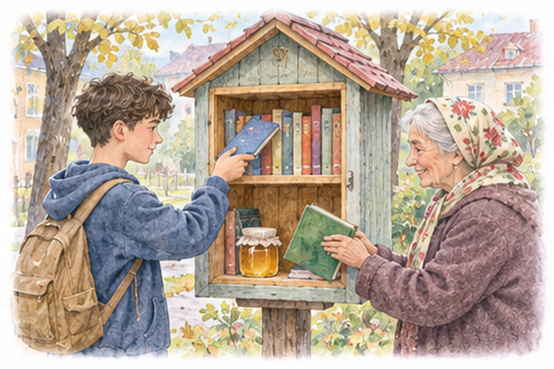

Listen to the text
Speed:

There is a library in our street that has no walls, no librarian and no opening hours. It is a wooden box on a pole, with a glass door and a small roof. On the door somebody has written: "Take a book. Leave a book." It appeared two years ago. Our neighbour, Mr Bohdan, who is a carpenter, built it for his wife's birthday. She is a retired teacher and has too many books. "I needed space in the flat," he says. "She needed readers." The rules are simple. You can take any book. You don't have to sign anything. You can bring it back or keep it. But if you take one, you should leave one, sooner or later. At first there were only twenty books in the box: novels, a cookbook and some fairy tales. Mr Bohdan's wife was afraid that people would steal everything. The opposite happened. In a month the box was so full that the door didn't close. Now the collection changes every day. I have found a detective story, a guide to mushrooms and an old atlas there. Somebody leaves children's books with drawings on the first page: "For the next reader. Enjoy!" People have started to leave notes inside the books. "This one made me cry on page 85." "Don't read the blurb. It tells too much." Last winter somebody put a pair of warm gloves in the box with a note: "For a reader with cold hands." The gloves disappeared the same day. A week later there was a jar of honey in their place. It is the smallest library in town. And, I think, the kindest.
Tap any sentence to hear it again.
Сподобалось? На сайті ще більше матеріалів для вчителів!
Reader, презентації, ігри, діагностичні та контрольні роботи до підручників 1-11 класів.
Перейти на сайт materials.allaenglish.com